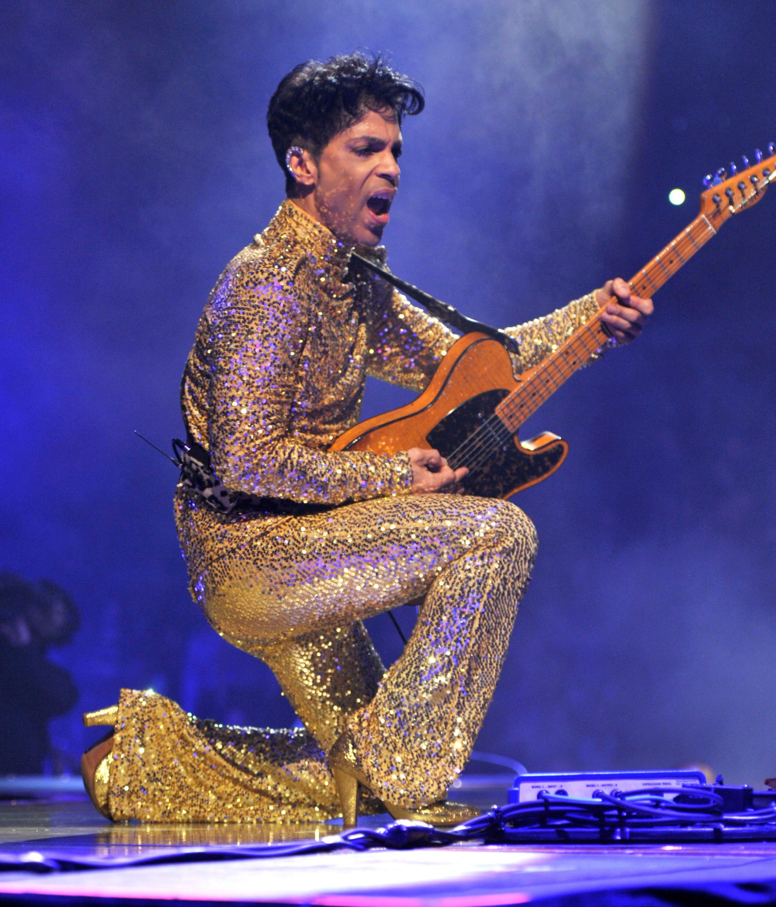

A tribute to one of the greatest creative geniuses of all time

Below are just a few notable events and achievements during Prince's life:
- 1958 - Born in Minneapolis, Minnesota.
- 1965 - Wrote his first song, "Funk Machine", at the age of seven.
- 1975 - Records tracks with first band "94 East".
- 1976 - Creates a demo tape with producer Chris Moon.
- 1977 - Signs management deal with local business man Owen Husney, and records another demo at Sound 80 Studios in Minneapolis. As a result, Prince signs with Warner Bros. Records.
- 1978 - Moves to California and records his first album, For You at Record Plant Studios on which Prince wrote, produced, arranged, composed, and played all 27 instruments on the recording, except for the song "Soft and Wet", whose lyrics were co-written by Moon.
- 1979 - Records album Prince containing the hit songs "Why You Wanna Treat Me So Bad?" and "I Wanna Be Your Lover", which sold over a million copies, and reached No. 11 on the Billboard Hot 100 and No. 1 for two weeks on the Hot Soul Singles chart.
- 1980 - Releases album Dirty Mind.
- 1981 - Forms side project "The Time" with lead vocalist Morris Day.
- 1982 - Records double album 1999 which sold over four million copies.
- 1984 - Stars in hit film Purple Rain and records the films soundtrack album, which contained some of his biggest hits to date, "When Doves Cry", "Let's Go Crazy", as well as the title track. The album sold more than 13 million copies in the US and spent 24 consecutive weeks at No. 1 on the Billboard 200 chart. The movie earned Prince an Academy Award for "Best Original Song Score".
- 1987 - Records double album Sign o' the Times.
- 1989 - Records Batman Soundtrack album. Also contributes to Madonna's hit Like a Prayer album.
- 1991 - Forms New Power Generation group and records Diamonds and Pearls hit record.
- 1993-1994 - after several years of battling Warner Bros., Prince formally adopts the "Love Symbol" as his stage name and begins releasing albums in quick succession in order to release himself from his contractual obligations. He also started appearing with the word : "Slave" written across his cheek as a protest against Warner Bros.
- 1996 - Free from his contract with Warner Bros., Prince begins his Emancipation era with said titled triple album, his first that included cover songs.
- 2000 - Upon the expiration of his publishing contract with Warner/Chappel, Prince returns to using his name.
- 2004 - Inducted into the Rock and Roll Hall of Fame.
- 2016 - After secretly battling health issues and a resulting opiod addiction for pain, Prince dies on April 21st at 57 from an apparent overdose of counterfiet pain medication laced with fentanyl.